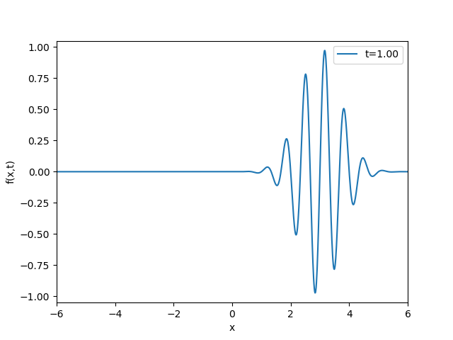

Code to solve Exercise 5.33
import numpy as np
import matplotlib.pyplot as plt
import matplotlib.animation as animation
import time, glob, os
def f(x,t=0):
return np.exp(-(x-3*t)**2)*np.sin(3*np.pi*(x-t))
x=np.linspace(-6,6,1001)
tmax=1.0
tmin=-1.0
tlist=np.linspace(tmin,tmax,61)
#Clean up old frames
for name in glob.glob('wp_*.png'):
os.remove(name)
# Make a first plot (save the lines objects returned from plt.plot)
fig = plt.figure()
plt.axis([x[0], x[-1], -1.05, 1.05])
lines = plt.plot([],[])
plt.xlabel('x')
plt.ylabel('f(x,t)')
# Function to return the background plot in the animation
def init():
lines[0].set_data([], []) # empty plot
return lines
# Function to return a frame in the movie
def frame(args):
frame_no, t, x, lines = args
y = f(x, t)
lines[0].set_data(x, y)
lines[0].set_label('t=%4.2f' %t)
plt.legend()
plt.savefig('wp_%04d.png' % frame_no)
return lines
# Construct list of all arguments to frame function
# (each call sends frame number, t value, x array, and lines list)
all_args = [(frame_no, t, x, lines)
for frame_no, t in enumerate(tlist)]
# Run the animation
anim = animation.FuncAnimation(
fig, frame, all_args, interval=150, init_func=init, blit=True)
# Make movie file in .gif format
os.system('convert -delay 30 wp_*.png ej5.33wp.gif')
Some example output images

Movie (.gif) obtained as output